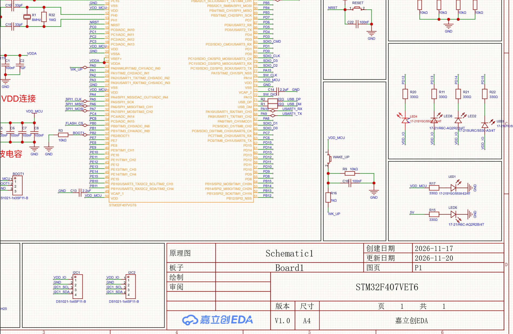
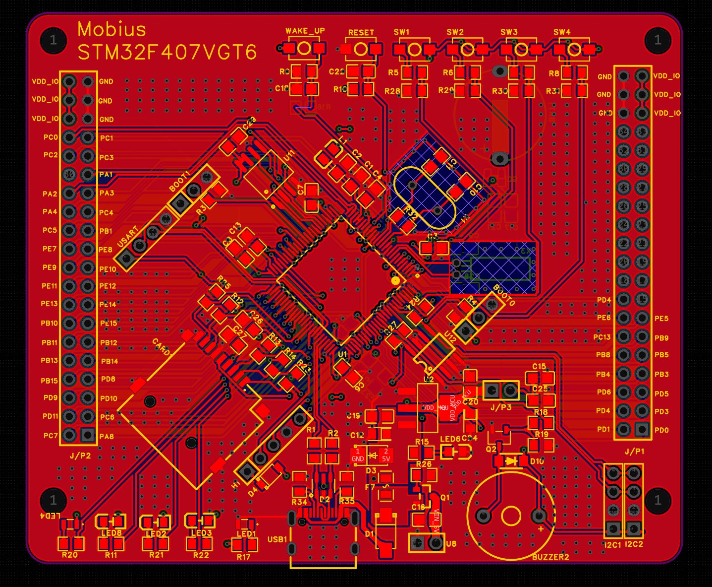
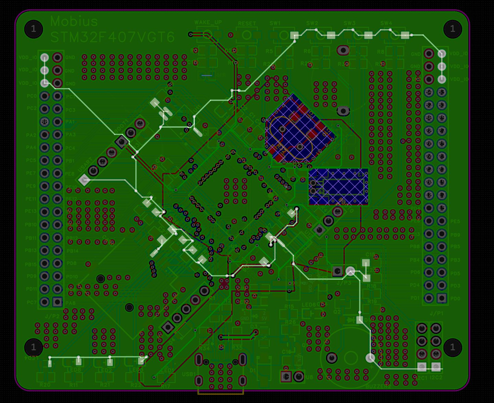
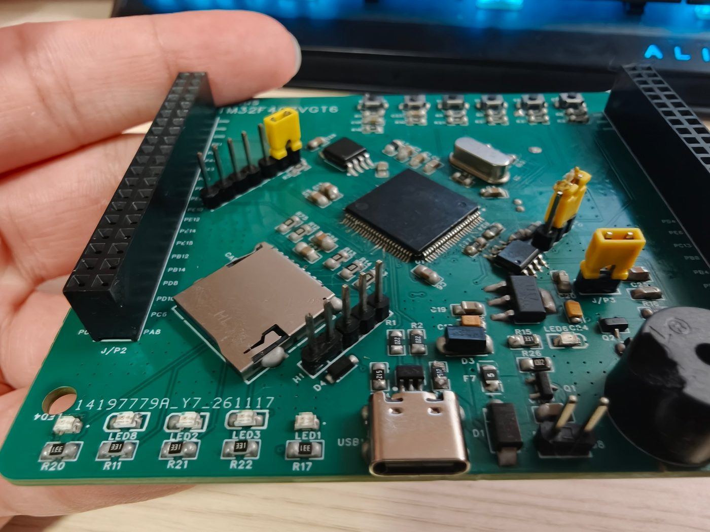
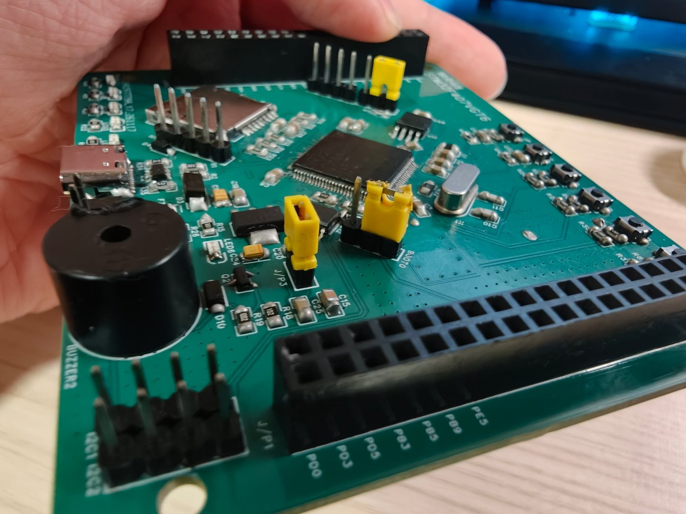
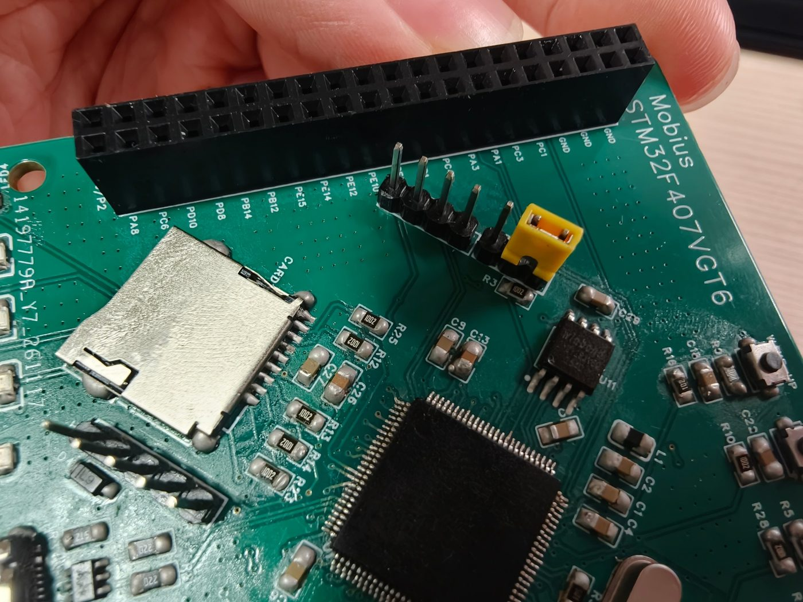
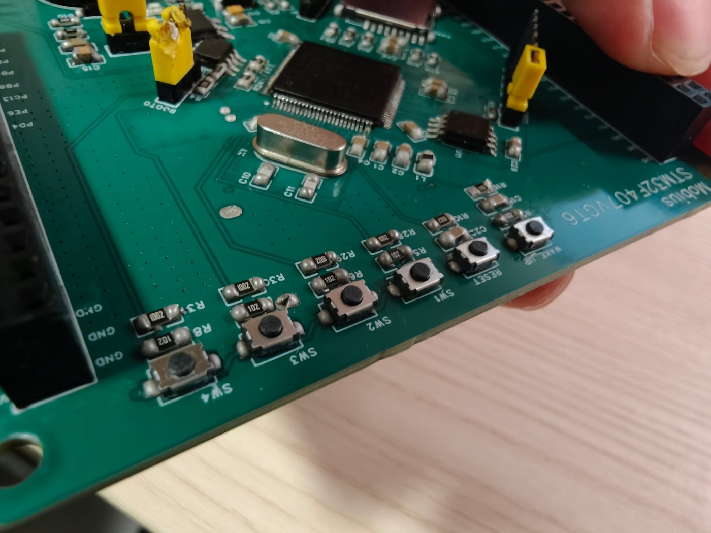
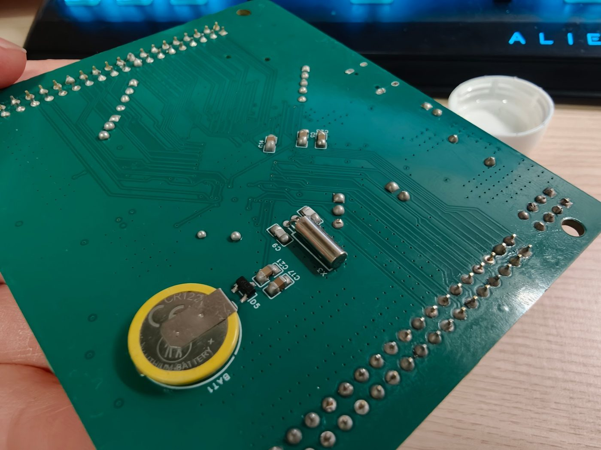

从一张空白原理图到一块能亮的板子，中间隔着一个礼拜的拉线、两次改板，和无数个「为什么不通电」。
这块板子叫 STM32F407VGT6_1，丝印上印着 Mobius STM32F407VGT6。四层，Type-C 供电，四个按键、四个灯、一个蜂鸣器、一个 SD 卡座，外加 RTC 电池座和两排引出的 GPIO。不算复杂，但它是我第一块从原理图一路画到能跑的板子。

一、原理图设计
开工之前先写功能清单，不写清单就动手，画到一半一定会发现少个上拉、多个电容。我的清单最后收敛成这样：
- 供电：Type-C 口 5V 进，LDO 降到 3.3V，VDDA 单独一组磁珠 + 电容
- 主控：STM32F407VGT6，LQFP100，1MB Flash / 192KB RAM
- 时钟：8MHz 无源晶振走 HSE，主频拉到 168MHz；32.768kHz 给 RTC，配 CR1220 掉电走时
- 人机：SW1–SW4 四个轻触键，LED1–LED4 四个指示灯，外加一个无源蜂鸣器
- 外设：SD 卡座（SDIO），BOOT0 跳线帽，SWD 四针调试口
- 扩展：两排 2.54 排针，把能引的 GPIO 全引出来
器件选型：先看限流，再看封装
选元件时最该盯的是两个参数：限流和封装。
- 限流决定你会不会「点亮一颗电容」。电流选大了，元件是真会冒烟的。
- 封装直接决定你接下来焊接的难易程度。新手一律选 0805！！！！——别碰 0402，它比米粒还小，镉子一抖就找不着了。
数据手册是免费的答案
正经的选型流程：在立创商城搜元件 → 把需要的参数（电压、电流、封装、通道数）填进去 → 点开候选 → 下数据手册（芯片类一定要下）→ 看典型应用电路。
那张典型应用图，基本就是「照着画」的答案。比如 「AMS1117」这类 LDO，手册里画得清清楚楚：输入输出各配一大一小两个电容——大的储能，小的滤高频，连参考容值都给你标好了。
手册动辄几十页，英文、表格、曲线——丢给 AI 读比自己硬啃轮椅得多：「这颗芯片的典型应用电路是什么」「这几个电容分别起什么作用」，问完照着画就行。
先补点原理，不然画完也不知道为什么
画之前最好知道手里这颗是什么：LDO（线性降压，压差大就发烫）、Buck（开关降压，效率高但要电感）、Boost（升压）。还有各种电容的特性——陶瓷、钽、电解，容值一样、用处完全不同。
再往下是三极管和二极管：共射、共集、开关管、续流二极管、TVS……这些是模电的内容，技术选考生应该很有感觉。我当时是回头翻书补的。
让画面整洁的几条规矩
- 标签朝上：所有元件的位号和参数保持同一方向，别横七竖八
- 分布均匀、横平竖直：不追求好看，追求「能看懂」
- 多用网络标签：同一根线不用真画过去，起个名就接上了。模块之间的耦合立刻降下来，画面上的线「少而精」
- 每个模块用方框圈起来，器件摆在方框中心，右下角标出模块名（电源 / USART 引出 / EEPROM…）——做完这一步，图纸会突然变得很舒服
最后跑一遍 DRC，没有报错就可以开始画 PCB 了。
补一句本项目的经验：GPIO 引出那部分，可以先不标网络。等 PCB 画到一定程度、引脚位置定下来了再回去标，布线会顺很多。
几个我当时踩过、后来每次都会查的点
- BOOT0 一定留跳线或下拉电阻，不然程序跑飞了只能拆焊盘
- VDDA 必须经磁珠或 0Ω 从 VDD 隔离，ADC 才稳；旁边配 100nF + 1uF
- 复位电容 100nF 别省，上电复位不稳的时候，现象是程序随机不启动
- 每个电源引脚都放一个 100nF，这是 ST 手册里写的，照做就行



图是嘉立创 EDA 导出的多页拼图，缩小看会糊——点开原图能看清网络标号。标题栏上的创建日期是 2026-11-17，版本 V1.0。
二、PCB 设计
四层板：顶层信号 / 内层地 / 内层电源 / 底层信号。第二层整片地，第三层 3.3V 平面——这两层铺满之后，大部分走线就只剩下顶层和底层，电源完整性也顺手解决了。

布局按「接口靠边、核心居中」来：Type-C 和 SD 卡座在板边，主控和晶振在中间偏上，按键成一排放在下沿，方便按；SWD 和 UART 排针靠右上，插线不挡手。晶振离主控引脚尽量近，走线包地，下面不铺其他信号。


走线没有太多玄学：电源线加粗到 20mil 以上，晶振线短而直，信号线尽量不跨分割，过孔打在焊盘旁边而不是焊盘上。真正花时间的其实是对齐和规则检查——DRC 里的丝印压焊盘、间距过近，一条条清完，板子才敢发出去打样。

三、焊接技巧与心得
我焊接的顺序是：Type-C → LQFP100 → 0402 阻容 → 插件。先焊最小的贴片，插件最后上，这样板子在前半程一直是平的，好放、好压。
LQFP100 的四个角先对齐
我的办法是：把芯片放在焊盘上，先用烙铁在对角两个引脚上点一点点锡固定，然后转到显微镜或放大镜下看四边的引脚有没有全部落在焊盘上。差一点点，就把那两点的锡吸掉重新对。对齐比什么都重要——一旦歪着焊完 100 个脚，返工就是灾难。
固定好之后，用拖焊：烙铁带锡从一角往下拉，多余锡用吸锡带收掉。最后用万用表蜂鸣档，把相邻引脚逐个测一遍，确认没连锡。
Type-C 是最容易假焊的地方
那种 16pin 贴片 Type-C，四个固定脚在两侧、信号脚在中间。固定脚吃锡量大，要先焊；中间脚小，用尖头烙铁一个一个拖。焊完用手轻轻搬一下插座——能晃动就是假焊，插上电就会时有时无。

上电之前，先测短路
这一步救过我一次。焊完所有东西、插电之前，用万用表二极管档量 3V3 和 GND：正常压在 0.3–0.5V 上下，如果接近 0，就是短路，千万别上电。我还有一次是把 5V 和 3.3V 的铜皮焊连了，靠这一步发现的。
另外，第一次上电建议用带限流的电源，限到 50–100mA。真短路了，电源直接限流，芯片不至于冒烟。


最后是结果——插上电，灯亮，SD 卡能读，串口能收到字：
四、STM32F407 系列 Keil 环境配置
硬件跑通只是第一步，软件环境不对，板子照样一动不动。这部分我按顺序记一下，换台电脑能照着装。
1. 装 Keil MDK 和器件包
- 装 Keil MDK-ARM V5（现在叫 MDK v5，装的其实是 µVision + ARM 编译器）
- 打开
Pack Installer，搜 STM32F4，装Keil::STM32F4xx_DFP器件支持包 - 装 ST-Link 驱动，插上调试器后设备管理器里应该出现 STM32 STLink
2. 新建工程
新建工程 → 选芯片 STM32F407VG → 弹窗里勾上 CMSIS Core 和 Device: Startup，其余先空着。然后在 Options for Target 里把 Debug 选成 ST-Link Debugger，右侧 Settings → Port: SW，能扫到 SW Device 就说明通了。
3. Flash Download 别忘了配算法
Options for Target → Utilities → Settings → Flash Download，勾 Erase Full Chip 或 Erase Sectors，Programming Algorithm 里必须添加 STM32F4xx 1MB Flash。没加算法，点下载会报 No Algorithm found——这是我卡最久的一个坑。
4. 时钟树：HSE 8MHz 拉到 168MHz
F407 的标准配置是：HSE 8MHz → PLLM 分频到 1MHz → PLLN 倍频到 336MHz → PLLP 二分频得到 168MHz 系统时钟。HAL 里长这样：
RCC_OscInitTypeDef osc = {0};
osc.OscillatorType = RCC_OSCILLATORTYPE_HSE;
osc.HSEState = RCC_HSE_ON;
osc.PLL.PLLState = RCC_PLL_ON;
osc.PLL.PLLSource = RCC_PLLSOURCE_HSE;
osc.PLL.PLLM = 8; // 8MHz / 8 = 1MHz
osc.PLL.PLLN = 336; // 1MHz * 336 = 336MHz
osc.PLL.PLLP = RCC_PLLP_DIV2; // 336 / 2 = 168MHz
osc.PLL.PLLQ = 7; // USB 48MHz
HAL_RCC_OscConfig(&osc);
RCC_ClkInitTypeDef clk = {0};
clk.ClockType = RCC_CLOCKTYPE_HCLK | RCC_CLOCKTYPE_SYSCLK
| RCC_CLOCKTYPE_PCLK1 | RCC_CLOCKTYPE_PCLK2;
clk.SYSCLKSource = RCC_SYSCLKSOURCE_PLLCLK;
clk.AHBCLKDivider = RCC_SYSCLK_DIV1; // 168MHz
clk.APB1CLKDivider = RCC_HCLK_DIV4; // 42MHz
clk.APB2CLKDivider = RCC_HCLK_DIV2; // 84MHz
HAL_RCC_ClockConfig(&clk, FLASH_LATENCY_5);注意 FLASH_LATENCY_5：168MHz 下 Flash 要等 5 个周期，写 0 会跑飞。APB1 最高 42MHz、APB2 最高 84MHz，超了外设直接罢工。
5. 常见报错
- No target connected —— SWD 线序反了，或者板子没供电
- Cannot access target —— 芯片进了低功耗，接上 RESET 再试，或者把 BOOT0 拉高进串口下载模式
- 下载成功但程序不跑 —— 先看 BOOT0 是不是被拉高了，再从 BOOT0=0 重新上电
- 串口乱码 —— 波特率对不上，或者晶振没起振，跑的是内部 HSI
一句话总结：硬件上电之前先测短路，软件下载之前先对时钟。
这块板子现在还在桌上，下一步是给它写一套自己的底层库——GPIO、定时器、串口、SDIO，一个一个来。等哪天能把 FreeRTOS 跑上去，再回来补一篇。
— Mobius · 2026.11.21 · 杭州